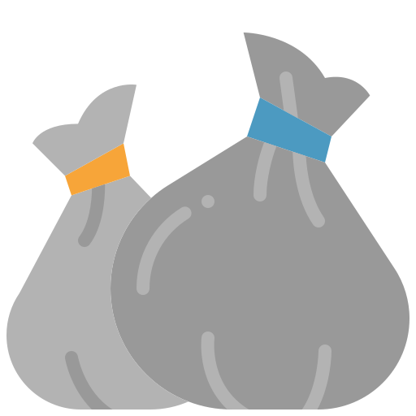
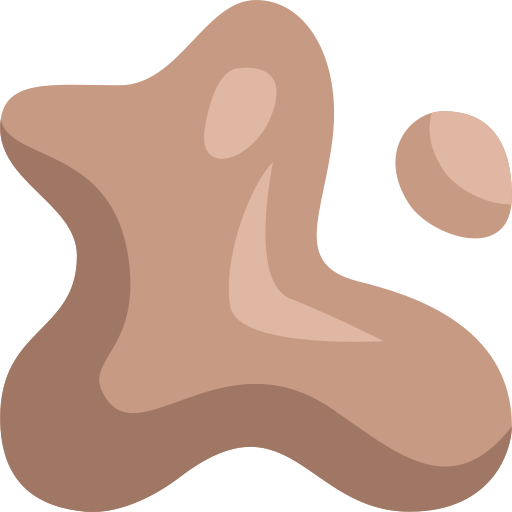
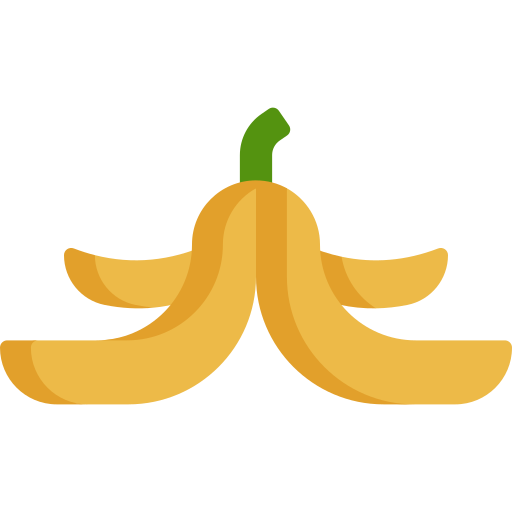

Click any element on any webpage — a banner, a sidebar, an ad — and sweep it away for good. Where you swept, you can plant something.
Every page you sweep leaves a little plot. Plant a fern, a monstera, a cherry blossom. Water them with a click. Make the internet your garden.




The internet is built for everyone, but that doesn't mean it's optimized for you. Most of the websites we visit daily are designed with a "one-size-fits-all" approach, often resulting in busy interfaces filled with sidebars and recommendations that don't always align with your immediate goals. Broom is an exploration in personalizing that experience, giving you the tools to curate the web into a space that feels right for your specific workflow.
Instead of just accepting a standard layout, what if you could tuck away the elements you don't use? This is the power of subtractive design: by simplifying your digital environment, you create a quieter, more intentional workspace. It turns the browser from a static delivery system into a flexible canvas that you can shape to fit your own aesthetic and functional needs.
Ultimately, the web should be a place you enjoy returning to—because we have to return to it every single day. Think of it like your digital home; wouldn't you want to make it more inviting? By removing the distractions and adding your own touch into the page, you're just making the web feel less like a public space and more like your own private world.